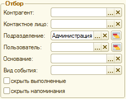

Обработка предназначена для отображения календаря со списком событий на определенный период. Список событий включает в себя напоминания, получателем которых является текущий пользователь, и документы выбранного вида в соответствии с установленными отборами. Информация может быть представлена в виде календаря на день, на неделю или на месяц, а также в виде списка событий. Календарь может использоваться для ввода новых событий на выбранную пользователем дату.
Форма календаря. Является основной формой АРМ. Форма состоит из следующих элементов:
Панель "Заголовок". Содержит кнопки для переключения вариантов отображения календаря, кнопку вызова формы настроек календаря.
Область "Дата календаря".
Используется для выбора даты для отображения на календаре. Интервал времени, который сейчас изображен на календаре, отображается в заголовке области. В режиме "Список событий" доступны поля для выбора произвольной даты календаря и выпадающий список, который содержит различные предопределенные интервалы.
Область "Новое событие".
Используется для ввода нового документа "Событие" или напоминания. В поле "Рабочий лист" может быть указан рабочий лист, на основании которого должен быть введен новый документ. Рабочий лист может быть заполнен автоматически при контекстном переходе из других АРМ. В поле "тема" может быть указана тема события или напоминания. Новый документ всегда создается на текущую дату, которая затем может быть изменена на форме.
Область "Отбор".

Используется для указания фильтров, которые накладываются на события в календаре. Если какое-либо поле отбора заполнено значением, то в календаре будут видны только те документы (напоминания), в реквизитах которых имеется данное поле отбора и значение этого реквизита совпадает с введенным значением. Если выбраны несколько полей отбора, то будут видны только события, которые удовлетворяют всем условия одновременно. Для поля "Пользователь" отбор выполняется по автору документа и по табличной части "Пользователи" ("Участники") для документов "Событие" и "Рабочий лист".
Кнопки "Установить график" используются для изменения настройки "Использование графиков работ", "Сотрудник", "Базовый график" по текущему выбранному значению и назначения использования графиков работы при формировании календаря.
Флажок "скрыть выполненные" позволяет отключить отображение напоминаний со значением поля завершено = истина, а также события со значением поля состояние = "завершено" либо "отменено".
Флажок "скрыть напоминания" позволяет отключить видимость напоминаний в календаре.
Область "Календарь". Календарь используется для просмотра и ввода новых событий. Для ввода событий нужно выбрать подходящую ячейку и двойным щелчком открыть форму выбора вида документа. Новый документ всегда создается на дату ячейки, выбранной на календаре. Дата затем может быть изменена на форме.
ВАЖНО! Производительность системы при работе с АРМ Календарь зависит от количества выбранных видов документов и количества документов заданного вида в базе. Рекомендуется настроить календарь таким образом, чтобы отображались только документы вида "События", видимость остальных документов следует включать только по мере необходимости.
Настройка параметров
Используется для настройки различных параметров отображения диаграммы. Cостоит из следующих настроек:
Использование графиков работы. Назначает, какой график будет использоваться при формировании диаграммы: график сотрудника, базовый график или без учета графиков. В соответствии с выбранным графиком показываются рабочие/не рабочие интервалы времени, перерывы, выходные дни и т.д.
Сотрудник. Сотрудник, график которого используется.
Базовый график. График работы, по данным которого будет формироваться календарь.
Интервал календаря. Временной интервал для одной ячейки в режиме "На день".
Виды документов. Таблица содержит список из всех видов документов в конфигурации. Для документов какого-либо вида может быть включена/отключена видимость документов на календаре, а также доступность для ввода.
Способ вызова
Открывается из основной формы обработки по кнопке "Настройка параметров". Отдельно не используется.